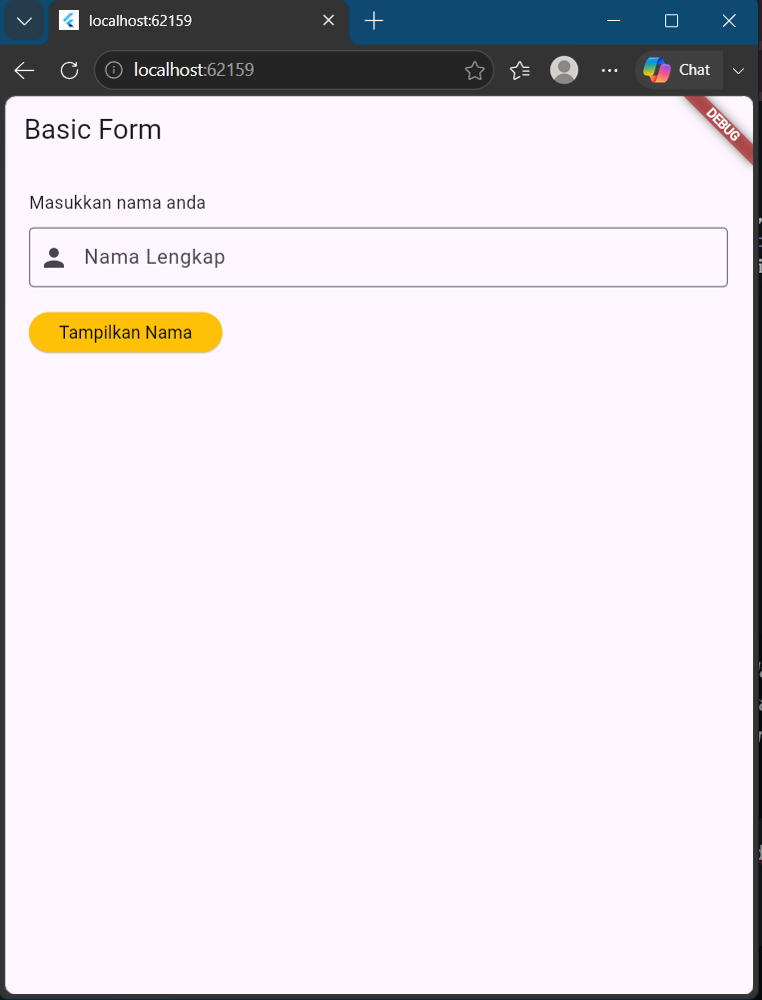
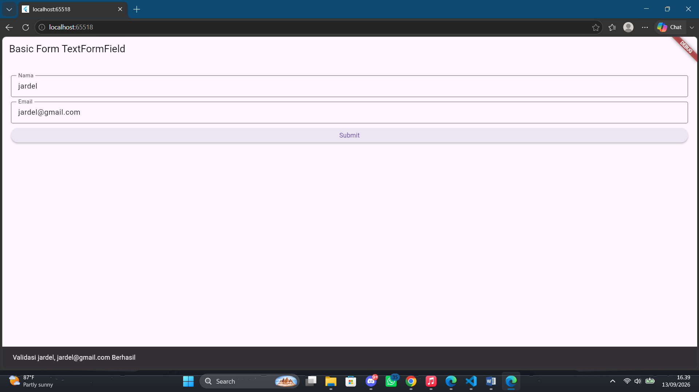
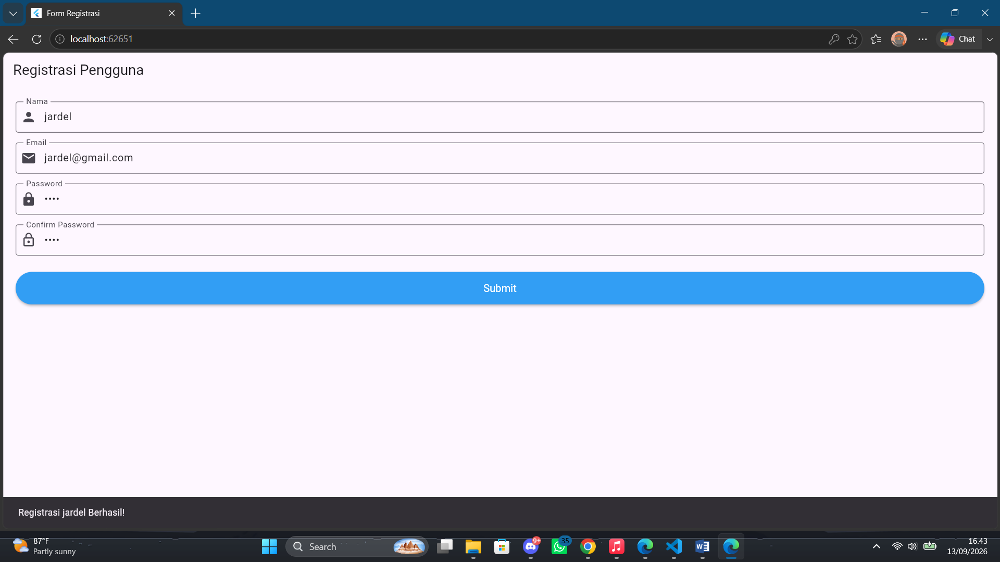

Laporan Praktikum 1
Mata Kuliah: Aplikasi Mobile (Flutter)
Jardel Poliviera
2411533012
Selesai
1. Pendahuluan
Dalam pengembangan aplikasi mobile menggunakan framework Flutter, formulir merupakan elemen krusial untuk berinteraksi dan mengelola input pengguna secara efektif. Praktikum ini berfokus pada implementasi Basic Form yang berfungsi sebagai antarmuka penerimaan nilai melalui berbagai widget, khususnya TextField dan TextFormField. Melalui pengerjaan berbagai skenario form mulai dari mengelola inputan sederhana, menerapkan aturan validasi email, hingga menyusun formulir registrasi yang modular kemampuan mengontrol data menggunakan TextEditingController dan GlobalKey<FormState> dapat diimplementasikan untuk membangun aplikasi yang responsif dan meminimalisir kesalahan input.
2. Tujuan Praktikum
Tujuan utama dari praktikum ini adalah:
- Mahasiswa mampu membuat basic form untuk menerima inputan dari keyboard dan mengelola inputan.
- Membuat beberapa input widgets.
- Membuat dan mengontrol inputan dari user.
3. Langkah Praktikum & Hasil
A. Basic Form TextField
1. Membuat Controller: Untuk mengambil teks yang diketik pengguna di TextField, kita memerlukan TextEditingController. Controller ini harus dihapus saat widget dihancurkan untuk mencegah kebocoran memori.
class _MyFormState extends State<MyForm> {
TextEditingController _textEditingController = TextEditingController();
@override
void dispose() {
_textEditingController.dispose();
super.dispose();
}
}2. Membuat Widget TextField: Widget TextField menerima input pengguna, dan properti controller dihubungkan ke variabel yang kita buat sebelumnya.
TextField(
controller: _textEditingController,
decoration: const InputDecoration(
labelText: 'Nama Lengkap',
hintText: 'Misalnya masnoer',
border: OutlineInputBorder(),
prefixIcon: Icon(Icons.person),
),
keyboardType: TextInputType.text,
onChanged: (text) {
print('Sedang mengetik teks: $text');
},
)3. Menampilkan SnackBar: Ketika tombol ditekan, kita mengambil nilai teks dari controller menggunakan .text, lalu menampilkannya lewat SnackBar.
ElevatedButton(
onPressed: () {
String inputText = _textEditingController.text;
ScaffoldMessenger.of(context).showSnackBar(
SnackBar(content: Text('Nama anda adalah: $inputText')),
);
},
style: ElevatedButton.styleFrom(
backgroundColor: Colors.amber,
foregroundColor: Colors.black,
),
child: const Text('Tampilkan nama'),
)
Gambar 1: Output Basic Form TextField
B. Basic Form TextFormField
1. GlobalKey dan Controller: Selain TextEditingController, kita membutuhkan GlobalKey<FormState>. Key ini bertindak sebagai identitas unik untuk mengecek apakah seluruh inputan di dalam form sudah valid atau belum.
class _MyFormTextState extends State<MyFormText> {
final _formKey = GlobalKey<FormState>();
final _nameController = TextEditingController();
final _emailController = TextEditingController();
@override
void dispose() {
_nameController.dispose();
_emailController.dispose();
super.dispose();
}
}2. Fungsi Validasi: Ketika tombol Submit ditekan, metode validate() dipanggil. Flutter akan mengecek semua TextFormField di dalam Form.
void _submitForm() {
if (_formKey.currentState!.validate()) {
String name = _nameController.text;
String email = _emailController.text;
ScaffoldMessenger.of(context).showSnackBar(
SnackBar(content: Text('Validasi $name, $email Berhasil')),
);
}
}
Gambar 2: Output Basic Form TextFormField
C. Latihan: Form Registrasi Pengguna
Pada form registrasi, selain mengecek kekosongan input, ditambahkan logika khusus untuk mengecek kecocokan antara kolom Password dan Confirm Password dengan cara membandingkan value dengan
_passwordController.text.
TextFormField(
controller: _confirmPasswordController,
obscureText: true,
decoration: const InputDecoration(
labelText: "Confirm Password",
border: OutlineInputBorder(),
prefixIcon: Icon(Icons.lock_outline),
),
validator: (value) {
if (value == null || value.isEmpty) {
return 'Masukkan konfirmasi password anda';
}
if (value != _passwordController.text) {
return 'Password dan konfirmasi password tidak cocok';
}
return null;
},
)
Gambar 3: Output Latihan Form Registrasi
4. Kesimpulan
Berdasarkan serangkaian percobaan dan latihan yang telah dilakukan, dapat disimpulkan bahwa pengelolaan form di Flutter menawarkan fleksibilitas yang dapat disesuaikan dengan tingkat kebutuhan aplikasi. Penggunaan TextField terbukti praktis untuk menangkap data sederhana, sedangkan penyusunan form yang membutuhkan aturan ketat seperti halaman pendaftaran mutlak memerlukan TextFormField agar dapat memanfaatkan eksekusi validator melalui identitas unik GlobalKey<FormState>. Selain aspek teknis input, implementasi pemisahan file kode pada latihan terakhir menegaskan pentingnya prinsip modularitas dalam rekayasa perangkat lunak; struktur ini tidak hanya mencegah penumpukan kode pada root aplikasi, tetapi juga mempermudah pelacakan alur validasi logika bersyarat.
Detail Praktikum
- Input Widget (TextField)
- Form State & Validator
- Event Handling (onPressed)
- Pemisahan File Modular